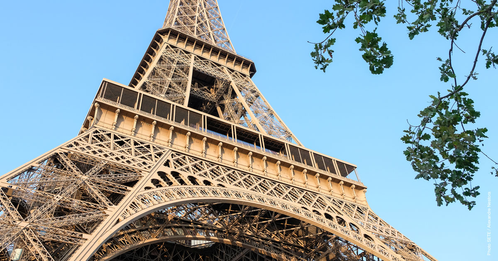
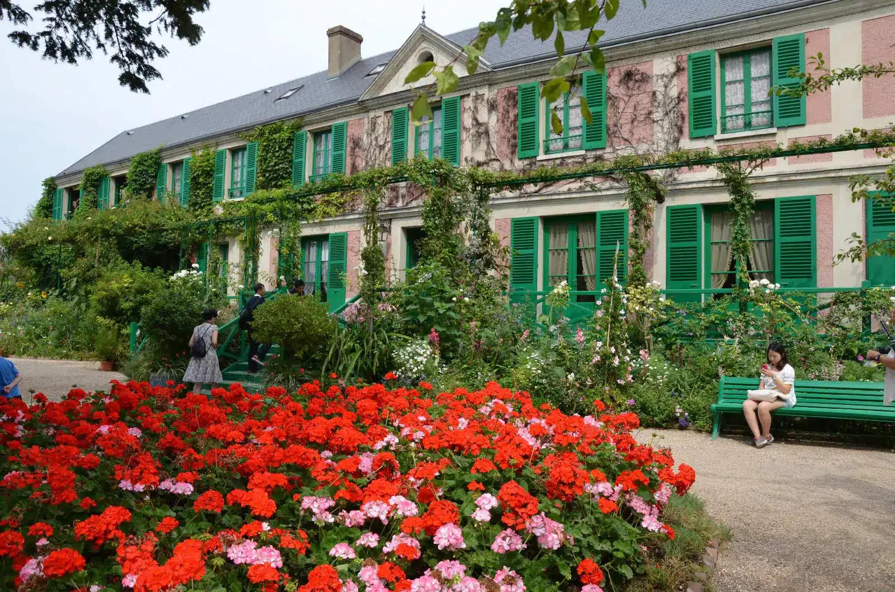
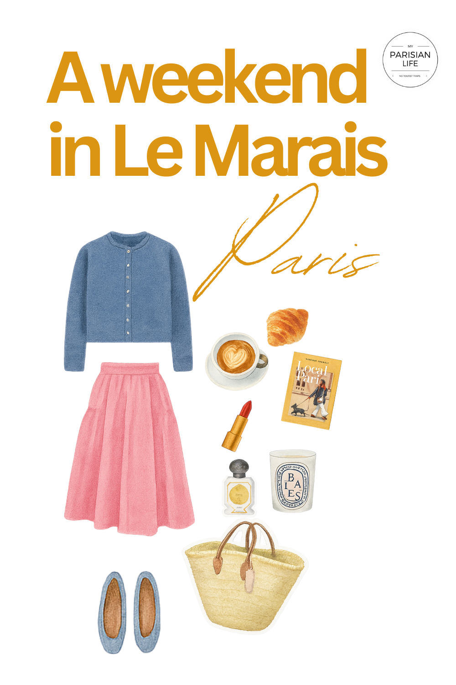
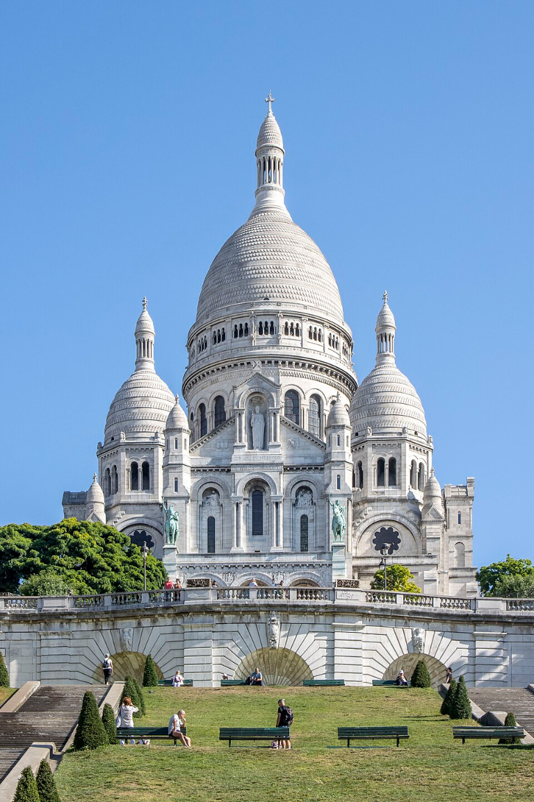
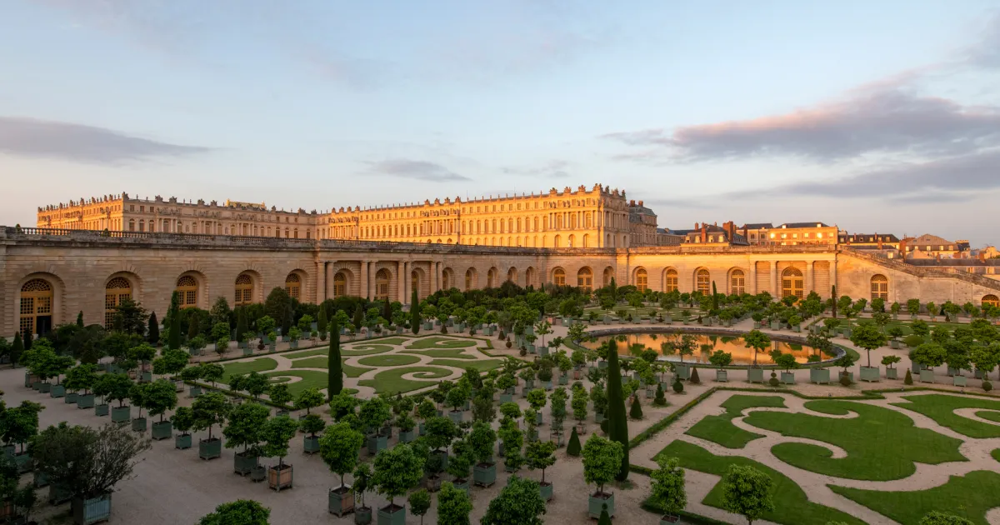

FRANCE · ÎLE-DE-FRANCE

75007FRA260530M260531<<172CIT<<24READ<<EXPEDITION
The Geometry
Three angles share one geometry — the Michelin dinner is the fixed point and the rest of the weekend gets timed around it. That coupling produces consequences none of the individual sub-topics surfaces alone.
Saturday-night dinner + Sunday-morning Giverny is the unique non-conflicting pairing inside 48 hours. Versailles or Fontainebleau eat 4–8 hours and fight the anchor.
Visa — Dinner
If a 2025 mental shortlist still has L'Ambroisie at three stars, revise — it fell to two in the March 2026 guide after Bernard Pacaud's retirement [1]. The new ★★ Hakuba at Cheval Blanc is the kaiseki alternative on the same date [27]; Alliance (Omiya/Joyeux, 5e) and Mojju (Korean-French, 7e) joined the two-star roster [3].
Visa — Visit

Museums

Neighbourhoods


Day-trips inside ~30 km

Notre-Dame is back to walk-in standby under 12 minutes after the 7 Dec 2024 reopening [102]. Centre Pompidou closed 22 Sept 2025 and reopens 2030 — the collection travels via the "Constellation" programme [110].
Visa — Tech
| Date 2026 | Event | Venue | Focus |
|---|---|---|---|
| Mar 26–27 | React Paris | Pullman Montparnasse | React frontend |
| Apr 9–10 | Android Makers | Paris | Android dev |
| Apr 15–16 | Paris Blockchain Week | Carrousel du Louvre | Crypto · institutional |
| Apr 22–24 | Devoxx France | Palais des Congrès, Porte Maillot | Java · platform · ~4,600 attendees |
| May 4–6 | GOSIM Paris | Station F | Open-source agentic AI |
| May 28–31 | YOUR WEEKEND | Station F events + AI Tinkerers | Tech dead-zone — accept it or shift |
| Jun 17–20 | VivaTech (10th ed.) | Paris Expo Porte de Versailles | Europe's biggest tech & startup show |
| Jun 26–28 | leHACK | Cité des sciences | Community cybersecurity |
| Sep 15–16 | Big Data & AI Paris | Porte de Versailles | ~15k visitors |
| Sep 17–18 | dotAI + dotJS | Folies Bergère | AI engineers · JS curated |
| Sep 24–26 | Paris Web | INSEP | Web standards · accessibility |
| Oct 13 | ai-PULSE | Station F | One-day AI |
| Nov 18–19 | Tech Show Paris | Porte de Versailles | Cloud · Data · DevOps · Security |
| Dec 1–3 | apidays Paris | Paris | Sovereign API stack · agentic AI |
Devoxx France at Porte Maillot pairs cleanly with the 8e three-stars — Le Cinq, Le Gabriel, Épicure, Pierre Gagnaire are all walkable from the venue.
Customs · 2026 Logistics
The one decision the research can't make for you: lock May 28–31 and accept the tech dead-zone, or slip three weeks for VivaTech and accept the Plénitude waitlist risk.